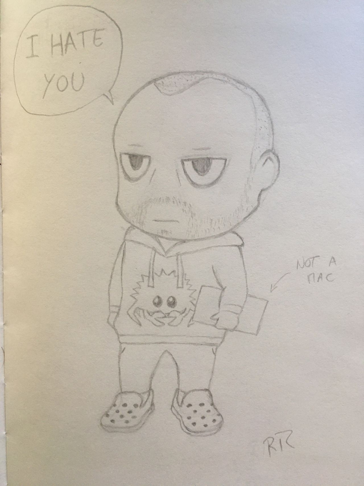

Landing Pad
My name is Tiago Caxias. I am a computer scientist and I daily dwell in product engineering.
I am passionate about computer science, programming languages, distributed systems, systems design and the open source world.
My favorite area or work is getting people to understand the strong coupling between UX, product delivery and everything written in the previous sentence.
In here you will find some texts written in mdBook about topics I feel like spilling more words than twitter finds reasonable and so that texts take less time to load and have less restrictions to readers than linkedin or medium.
Heads up, I am biased towards simplicity, efficiency and correctness.
To navigate use the links on the left or the arrow keys.
To jump to the next page tap right on your keyboard.
On the top of the page you can search this site and change the theme.
Principles of Product Engineering
2020-12-23
Preamble
There is an evaluation cycle going on right now, at my present company, that requires people to write a self-reflection and send it to their manager. While I firmly disagree with self-appraisals, don't trust the fallacy that you can evaluate oneself, doing a self-reflection is both important and fruitful. It's a good way to measure how your behavior and perception have evolved over time since every self-reflection is a function of these two variables.
I'm moving on to a new challenge on another company so I decided to make this self-reflection public, this is a good exercise mainly because it forces me to bring all context when writing any topic, plus the text might be of relative use to some readers.
Traditionally I would discuss tech-radar topics but I found them to be of less importance when comparing blocks to a stable and good quality Product Engineering.
I finished a three year cycle, mostly as a principal engineer. I met outstanding people, joined teams, grew teams, was mentor and mentee, shared a lot of experiences and, in the end, I got this feeling that I was naive when I joined.
Don't get me wrong, it's not bad, it's actually pretty good, it's a nice way to measure how much I grew. At the hiring process I was sold a vision of company which was in need of strong technical expertise and joined with that in mind, strong tech expertise was what I wanted to bring to this job when I joined and what I expected to deliver.
Turns out creating products. technical expertise and delivering value are quite different things.
Value
In a past life I worked a year and a half in a very small company, one of those lifestyle companies, and due to its small size I got the opportunity of getting really close to processes such as hiring, sales, customer service and defining company strategy. These topics are of utmost importance to the majority of companies even though they frequently are far from the software engineer.
This job was immensely useful since it made me understand very closely how to run a company, how does the money come in, what's customer churn, what's employee churn, what are prospects, what's upsell, what's the impact of a good and a bad hire and, foremost, what's communication. All of these things simply translate to value.
Value is what an employee can offer an employer, it's also what the employer is supposed to give to the employee at the end of the month, value. Salary, bonuses, benefits and any other perks are things that an employee can get as part of their work, whether these translate to value depends on the employee. You may value something in your compensation package but one teammate might value something else, which is normal.
Personal growth is one such notable example. Most people find value in personal growth but its value greatly depends on the employee and the kind of growth an organization offers. Over the next pages we will find more food for thoughts on this matter.
You probably heard the sentence: any decent answer to an interesting question begins, "it depends...". While this prerogative should not be abused, it surfaces the need to understand context when providing answers, it's not easy to align everyone's view in the same direction. Reason being, different entities, people or companies, value things differently. As a corolary one may say value depends on need and perception, how does one perceive value and which needs does one have.
I honestly find this concept extremely easy to understand, my employer is supposed to give me value, things that I need and care about. This begs the question, what am I supposed to give back to my employer? The answer is pretty straightforward, employers want value; but not for them, they want the employee to produce value for their customers. This simplifies everything a lot, an employee should not worry about the employer. Employees should worry about delivering value directly to the customers. Be mindful that they're not the company's customers, they're everyone's customers.
I still get puzzled by the immense literature about this topic. First there' the agile manifesto telling people to please their customers, then there's a multitude of lean publications which, along with agile, got into the hype train. If you read the agile manifesto and lean principles it tells you to deliver value. There's an entire new religion with fancy keywords and certifications, popping up in résumées everywhere, to bring software engineers the word from the messiah, and the word is, "deliver value".
Apparently it is hard to align everyone with this mindset.
Alignment
In the world of large companies people grew and became dedicated, specialized, tech-savvy, used to their surroundings. In these large companies, while leadership was aware of what the company wanted to deliver to customers it became harder for the ones producing this value to see the exact same picture. This is a problem of alignment, while everyone wears the same team sweater people are walking in different directions, seldom the direction the company wants to move in. It's great that some people focused on surfacing, to the software engineering world, that there are some things being forgotten or neglected and one such thing is lack of alignment.
Lack of alignment causes meetings to take infinite time, emails to be dense and confusing, and makes people want to take refuge behind documentation and processes. To speak a message is easy, to be sure the listener understood the exact same message is an endeavour proportional to how far the speaker is from the listener within the organization. Context is key here, the closer the people are, the more context they share, people too distant in the organization share little to no context.
Tribes begin to surge and the mindset of Us vs Them spawns naturally. As a simple example, not invented here is a common form of tribalism. One simple form which shows that group dynamics happen at the core of every company. Taking a brief look at sociology and group psychology topics:
- Intergroup Dynamics studies how one can dwell and better understand how large organizations act, in fact as groups of groups.
- Types of Groups show a little bit of how humans have clear group priorities, another item to add to the context that any person carries.
- Dunbar's number discusses a bit the size of the connection sphere a person can keep.
Even without studying sociology or group psychology it's simple to see that behavioral patterns in companies are recurrent and seldom change. Nothing is new here, mostly everyone knows empirically that there is a majorant to the group size of people we can sustain stable relations with (Dunbar) and that everyone has a background and values one's previous learnings and context (types of groups).
In all cases creating alignment comes down to communicating in a way that is effective and overcomes the hurdles posed by the intergroup dynamics. Communicating the best possible message, providing context, eliminating the possibility of cognitive biases.
Alignment is also a topic inside each group.
- Ingroup dynamics studies a wide range of theories.
- Status and Expectations also provide vital roles in shaping groups and ingroup behaviors, this bears the notion that humans have state, we are state machines.
- Investing and expecting return from relations is another topic which is both easy to understand but hard to manage.
- Groupthink shows that
the spheres pertain specific behaviors such as:
- Asch's conformity experiment details how we act differently when in groups.
- Milgram experiment surfaces how one can choose authority over conscience sometimes
Alignment, even with great communication, is super hard to get. While handling with groups of groups, delivering value with a large company is much harder than perceived.
Groups
Why do we need agile coaches, then? We wouldn't need them if we could keep focusing on something else outside our sphere of concern but since Dunbar said that that sphere has a bounded size, we're getting cognitive biases on most of our work. There is a limited amount of things we can constantly think about plus we favor our group over other people or groups.
Going back in time we can see solutions to this problem, how to keep groups aligned, one such solution was divide and rule. While devious in purpose, this technique used an outstanding way of solving the alignment problem, it moved the problem to smaller spheres, in manageable group sizes alignment is easier to maintain. Solving a problem is a goal clear enough and the ruler or any sphere had the autonomy to achieve the goal as they would believe it was best.
With a large mediatic footprint, spotify did two parts on how they planned or achieved to address this. There's a lot of controversy on whether spotify actually does this and whether these models do work, that is not relevant, the bottom line is that in order to achieve a major goal at scale, split that into smaller independent goals and give them to smaller independent groups. When the group size is manageable by all the sociology and group psychology limitations alive today, the group will have no alignment issues. With a common goal we can even make use of group dynamics and make it perform and deliver much better than in any other format.
The major caveat in the plan sketched above is that you cannot run a command-and-control structure. If you do, you'd be sharing expectations of things to happen instead of goals. The difference, if looking subtle, is a game changer. Product teams vs feature teams is something I've seldom seen properly applied. I cannot stress enough how this must be done right and the vision of product teams must be implemented without shortcuts, alternatives result in major misalignment between company stakeholders and customers, all caused by the wrong product being created and possibly delivered. The end result is: waste of time and money; more specifically, time to market lost and money wasted on doing the wrong thing.
Apart from the intergroup issues outlined above there are ingroup problems found in several teams. Some were born from selective reading of the principles inherent to the agile manifesto. Sentences like "build projects around motivated individuals", "continuous attention to technical excellence and good design enhances agility" and "the best architectures, requirements, and designs emerge from self-organizing teams" have tricked people's minds. People naturally value their group more than outside people or groups and fall into a cognitive bias where they see their group as better than other groups.
This tunnel vision stemming from ingroup psychology leads to reading known patterns from unknown data. Taking the quotes above from the agile manifesto principles it's possible to misread that "teams own architecture, they must be made of motivated individuals and they must keep focus to technical excellence and good design" in order to achieve the agile panacea. This ends in analysis paralysis, overengineering and, lastly, moving in the direction not intended by the company itself. This rogue line of action is how good groups get defiled from within.
Teams have a reduced vision of the world, that's the reason they're so productive, they have a specific scope. Apple, Gitlab and others has been known to battle overengineering and poor communication with techniques mainly placing a single person responsible for a certain topic in order to guarantee delivery. It's easier for a single person in the spotlight to get things going than for an entire group to be formally responsible. In sum this eliminates communication issues and keeps focus on value delivered, since there is no group decision thus no quorum required to get a final answer.
By delivering a clear and bite-sized goal to a team delivering value can be truly multiplied.
Delivery
Up until now we've covered issues from the understanding that value is the one thing that matters, to issues with alignment, to challenges caused by group behavior. How hard is it to organize for consistent and quality delivery with a large organization? Do we need to copy spotify? Copy netflix? Which path to take?
U.S., 1960s. Ken Iverson drew a strategy to make this happen. He became chairman of a company about to go bankrupt and he brought the company to the top. He made the company as light as possible, made people connect with value delivered but most of all everything was decentralized. It's a total representation of what agility aims to be, people focused on delivering value with a feedback cycle on that delivery, decentralization allowing people to be focused on goals instead of orders, teams finding their own way for delivering value.
You don't need to copy spotify, netflix, nucor or anyone else, in fact you should never copy blindly but learn by weighing pros and cons. Remember that if you're deciding roadmap top-down then you're using command-and-control and you're doing waterfall. Teams should have ideal size, be cross-functional and be completely independent. Not just engineers, product owners, managers, everyone required to deliver value should be on a team. Leadership should be good enough in order to decide goals so that teams can dedicate time in finding the way to achieve them. Product must be decided, designed, done and measured at the team level. Finally, alignment is communication, not agreement. Think mini-companies where each team is a company.
The glue? Short but strong guidelines where Everyone can go and understand what the contracts are. Finally, measuring value should not only be done at team level but also passed bottom-up so that leadership can act in the case of mismatches, in sum, pass information but give context as much as possible.
Context
In my self-reflection I had to bring up a lot of context which I tried to summarize over the last handful of pages. One of the key findings I did over these years is that software engineers are on the best spot to understand these issues with ease, I'll risk and say that it's in fact natural!
Today, topics such as microservices, distributed systems, scaling stateless systems, application orchestrators, metrics and alarms are quite common topics in production environments. All of these map to at least one of the issues which we see daily in product engineering at scale. Scaling problems are the same and software engineers are used to solve them. There are known patterns, papers, blog posts, books, meetups and full-fledged talks and conferences about these topics, software engineers must make use of all of this tech material and start handling the scalability concerns in organizations as they do in system design.
SLIs and SLOs
Some of us have read, praised and shared the notions of the SLI and SLO. Software engineers know how to do metrics and monitoring but not everyone measures business metrics. This is the core of SLIs, find a measure which is the best indicator of the level your service is providing. That has been brought up some pages ago, it's value.
In order to make value tangible, the organization must look at it as something every team can watch and drive, it's the only thing that teams need to create and that the customer wants or needs. By measuring it, the team will be able to run in continuous mode, since there's a gauge for the quality of delivery, and will be able as well as provide a concise line of information to leadership reporting how the team's work is doing. Plus, by having an SLI, a team will never again be disconnected from the value that it needs to deliver, overengineering, imaginary needs and analysis paralysis should disperse. In fact it's not much different from TDD either, walk towards a well-defined, shared and understood goal.
Engineers know exactly how to do this, there is no reason to believe that the notion of delivering value is hard to grasp. By using SLIs, an organization is able to place, both at the leadership and at the team level, KPIs to properly measure value delivered.
State, Causality and Convergence
Alignment concerns doing communication in a way that all desired groups or people get to a common understanding or in plain terms, get everyone to look at the same picture. In software engineering alignment is handled in multiple ways. As previously discussed, lack of alignment falls down frequently to inappropriate communication which frequently compromises lack of context. Let's approach this using state, causality and convergence.
Context is, in the software engineering world, state. Stateless applications are the easiest to deal with, no context must be kept between executions. Much like pure functions, only the variables passed to the function are required to calculate the result.
To most software engineers that's a concept dealt with on a daily basis. Every software engineer knows how HTTP is stateless. The word "stateless" here is a misnomer, the HTTP protocol requires no state on the server but the request has to carry the entire state for the request. In order for some specific business logic to happen a rich request has to be performed containing complete context so that the server does what we expect of it. The trick of sending state in requests is not new, the way of giving full context when communicating should be used as much as stateless protocols are used and trusted.
It's common to have assumptions when communicating, it should be also common to send those assumptions with the communication itself. That's the principle of version vectors. Holding and passing information is legitimate, stating the state, or context, the sender had when the information was written is crucial. This way causal context is always present and the receiver of the message has the possibility of resolving any conflict. It's ok to assume and communicate on top of those assumptions, it's mandatory, however, so state those assumptions openly with the communication. Understanding the way to go must be decided to the listener. I've seen this pattern benefiting most in cross-teams communication, where tribalism such as not-invented-here is more bound to happen.
Passing an order is different from passing intent. Software engineers know the difference between events and commands. Reporting something is decoupled from the actions of systems consuming the message. Analogously, a goal communicated in a product-team organization must have similar effect. Leadership will guarantee that the message holds full context on the goal to achieve, but the reaction from the team itself should be decided autonomously by the team, regarding current state, context, and SLI, value.
This is not new, CRDTs work this way. (In here I'm talking about CvRDTs only.) Assume all state held by people is a CRDT. When leadership replicates something to teams it will eventually converge. However the convergence moment and the final result is unknown to the sender because they depend on the CRDT representing the team and other replication flows.
Teams have more than one incentive which causes them to change state, priorities, context, pick your term. Since the network is unreliable, prioritize communication and define well what's the decision method. They must have the autonomy to apply causality and convergence rules by themselves.
Domain Driven Design
Group dynamics is an extensive topic. One of the things I've seen hurting companies is trying to fight Conway's law. It's only natural that systems mimic the organization producing and maintaining them: aligning the groups who do the actual work is hard, always passing state is tiring, dealing with causality is a time-killer, convergence is eventually consistent. While we did find ways to communicate properly it should be kept to a logical minimum. Some companies found the ideal team size (pick any result) which means that the size of a group where communication has implicit state has an ideal range of values.
Again, this is simple to understand for software engineers: Micro-services and Domain Driven Design are the bread-and-butter of today's system design. Monoliths are considered evil but nano-services are atrocities. Designing services too small leads to a disparity between business domain and services provided and creates an enormous burden on communication between services. Notable analogy, it's empirically known that picking up a team and giving a task to each member and hope it all connects in the end is bad for speed and causes major disruption at the end. This should be noted and moved to the organization level, teams should have a stable and good size. That helps out with stable work relationships, keeps a healthy number of people on the same business context and allows for a cross-functional boosting plurality and inclusion too.
Final State
These years of experience turned out to be more fun than I thought. I've worked in several companies with different sizes and behaviors and although I usually rant about technologies, when looking back, I only see opportunities to improve. These opportunities come mostly from designing organizations. Fun fact, they are distributed systems just like the ones everyone knows, plus, the same techniques can be applied.
I've found that good principles, along with a good technology knowledge, will make you benefit the most. I've been asked about the principal engineer role, my answer today is: aim to be a principled engineer, that will make you a much stronger member of an organization and a far more valuable person.

A caricature of me by Rafael T. Rocha
Technology Alignment
Instead of a proper tech radar I wrote this to state my bias openly.
Take D&D alignments where the lawful/chaotic axis would evaluate the restrictions while developing and the good/bad axis would evaluate the amount of pain you get while operating that code. These are orthogonal, any language, framework, system design or technique will evaluate to specific value on both axes regarding the task at hand.
Orthogonal to these two axes I'll add a logic axis, in D&D would be whether someone is breaking role-play, which translates to cost-benefit or the I in ROI. Overengineering is measured here, since we're talking about product engineering and not plain engineering. As corollary there are two sentences, the practical chaotic stupid is not an alignment and the philosophical there is nothing so useless as doing efficiently that which should not be done at all.
I am biased towards lawful good, I prefer the lawful and the good ends of the axes. Furthermore, I consider the logic axis to be prohibitive below a certain threshold. If something is lower than a reasonable value on the logic axis then a major issue is happening.
The rationale here is, when you're being paid to build something and you imagine, dream of or make up requirements not originally there, then you're costing the company both time to market and money, the worst part is that these costs are hidden. Never, ever, do this. Ever. If you believe some requirements should be there then talk to your peers and double check that's true. Don't disagree and commit on this, just raise awareness and, ultimately, leave. Everyone in a group must be moving to the same target. Always. Maturity turns out to have a large slice of "can you measure the I in ROI", if it's not worth doing, don't do it, there is hardly anything as bad as failing on this analysis.
About
Right now my gear is an MX Brown Vortex Cypher split spacebar and some Sennheiser HD599 with a Dragonfly Black v1.5 DAC.
The Myers–Briggs Type Indicator filed my as ENTJ-T, I have one wife, two kids, three cats and I look like this:
Here's other digital footprint I willingly create: